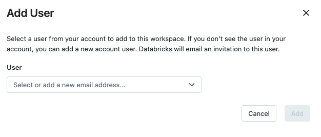

Manage users, service principals, and groups
This article introduces the Databricks identity management model and provides an overview of how to manage users, groups, and service principals in Databricks.
For an opinionated perspective on how to best configure identity in Databricks, see Identity best practices.
Databricks identities
There are three types of Databricks identity:
Users: User identities recognized by Databricks and represented by email addresses.
Service principals: Identities for use with jobs, automated tools, and systems such as scripts, apps, and CI/CD platforms.
Groups: A collection of identities used by admins to manage group access to workspaces, data, and other securable objects. All Databricks identities can be assigned as members of groups. There are two types of groups in Databricks: account groups and workspace-local groups. For more information, see Difference between account groups and workspace-local groups.
You can have a maximum of 10,000 combined users and service principals and 5,000 groups in an account. Each workspace can have a maximum of 10,000 combined users and service principals and 5,000 groups.
For detailed instructions, see:
Who can manage identities in Databricks?
To manage identities in Databricks, you must have one of the following: the account admin role, the workspace admin role, or the manager role on a service principal or group.
Account admins can add users, service principals, and groups to the account and assign them admin roles. Account admins can update and delete users, service principals, and groups in the account. They can give users access to workspaces, as long as those workspaces use identity federation.
Workspace admins can add users and service principals to the Databricks account. They can also add groups to the Databricks account if their workspaces are enabled for identity federation. Workspace admins can grant users, service principals, and groups access to their workspaces. They cannot delete users and service principals from the account.
Workspace admins can also manage workspace-local groups. For more information, see Manage workspace-local groups (legacy).
Group managers can manage group membership and delete the group. They can also assign other users the group manager role. Account admins have the group manager role on all groups in the account. Workspace admins have the group manager role on account groups that they create. See Who can manage account groups?.
Service principal managers can manage roles on a service principal. Account admins have the service principal manager role on all service principals in the account. Workspace admins have the service principal manager role on service principals that they create. For more information, see Roles for managing service principals.
How do admins assign users to workspaces?
To enable a user, service principal, or group to work in a Databricks workspace, an account admin or workspace admin needs to assign them to a workspace. You can assign workspace access to users, service principals, and groups that exist in the account as long as the workspace is enabled for identity federation.
Workspace admins can also add a new user or service principal directly to a workspace, which both automatically adds the user or service principal to the account and assigns them to that workspace.
Workspace admins can create account groups in identity federated workspace using the workspace admin settings page or the Account Groups API. Groups created directly in workspaces using the Workspace Groups API, known as workspace-local groups, are not automatically added to the account.
For those workspaces that aren’t enabled for identity federation, workspace admins manage their workspace users, service principals, and groups entirely within the scope of the workspace. Whenever a user or service principal is added to the workspace, that user or service principal will be synchronized to the account level. Whenever a group is added to the workspace, that group will be a workspace-local group and it will not be added to the account. See Special considerations for groups.
For detailed instructions, see:
How do admins enable identity federation on a workspace?
Important
If your account was created after November 8, 2023, identity federation is enabled on all new workspaces by default, and it cannot be disabled.
To enable identity federation in a workspace, an admin needs to enable the workspace for Unity Catalog by assigning a Unity Catalog metastore. See Enable a workspace for Unity Catalog.
When the assignment is complete, identity federation is marked as Enabled on the workspace’s Configuration tab in the account console.
Workspace admins can tell if a workspace has identity federation enabled from the workspace admin settings page. In an identity federated workspace, when you choose to add a user, service principal, or group in workspace admin settings, you have the option to select a user, service principal, or group from your account to add to the workspace.

In a non-identity federated workspace, you do not have the option to add users, service principals, or groups from your account.
How does Databricks sync identities between workspaces and the account?
In 2022, all existing workspace users and service principals were synced automatically to your account as account-level users and service principals. Databricks will continue to sync users or service principals to the account whenever you add them to a workspace, regardless of whether or not the workspace is enabled for identity federation. If the workspace user shares a username (email address) with an account user or admin that already exists, those users are merged.
Workspace-local groups are not synced to the account level. Workspace-local groups are identified as workspace-local in the workspace admin settings page and (if identity federation is enabled for the workspace) on the workspace Permissions tab in the account console. For more information, see Special considerations for groups.
Important
If an account admin removes a user or service principal at the account level, that user is also removed from their workspaces, regardless of whether or not identity federation has been enabled. We recommend that you refrain from deleting account users or service principals unless you want them to lose access to all workspaces in the account. Be aware of the following consequences when you delete users:
Applications or scripts that use the tokens generated by the user will no longer be able to access the Databricks API.
Jobs owned by the user will fail.
Clusters owned by the user will stop running.
Queries or dashboards created by the user and shared using the Run as Owner credential will have to be assigned to a new owner to prevent sharing from failing.
Special considerations for groups
While users and service principals created at the workspace level are automatically synchronized to the account, groups created at the workspace level are not. Instead, Databricks has the concept of account groups and workspace-local groups, with the following behaviors:
Account groups can be granted access to data in a Unity Catalog metastore and permissions to identity federated workspaces. Account groups can be created by account admins using the account console and the Account Groups API and by worksapce admins of identity-federated workspaces using the workspace admin settings page and the Account Groups API.
Workspace-local groups are legacy groups. These groups are identified as workspace-local in the workspace admin settings page. Workspace-local groups cannot be assigned to additional workspaces or granted access to data in a Unity Catalog metastore.
Note
In identity federated workspaces, workspace-local groups can only be managed by workspace admins using the Workspace Groups API.
Databricks recommends against using workspace-local groups instead of account groups. You must enable your workspace for identity federation in order to use account groups. If you are enabling an existing workspace for identity federation, you can use both account groups and workspace-local groups side-by-side, but Databricks recommends turning workspace-local groups into account groups to take advantage of centralized workspace assignment and data access management using Unity Catalog. See Migrate workspace-local groups to account groups.
Assigning admin roles
Account admins can assign other users as account admins. They can also become Unity Catalog metastore admins by virtue of creating a metastore, and they can transfer the metastore admin role to another user or group.
Both account admins and workspace admins can assign other users as workspace admins. The workspace admin role is determined by membership in the workspace admins group, which is a default group in Databricks and cannot be deleted.
Account admins can also assign other users as Marketplace admins.
See:
Assigning entitlements
An entitlement is a property that allows a user, service principal, or group to interact with Databricks in a specified way. Entitlements are assigned to users at the workspace level. The following table lists entitlements and the workspace UI and API property name that you use to manage each one. You can use the workspace admin settings page and workspace-level SCIM REST APIs to manage entitlements.
Entitlement name |
Entitlement API name |
Default |
Description |
|---|---|---|---|
Workspace access |
|
Granted by default. |
When granted to a user or service principal, they can access the Data Science & Engineering and Databricks Machine Learning persona-based environments. Can’t be removed from workspace admins. |
Databricks SQL access |
|
Granted by default. |
When granted to a user or service principal, they can access Databricks SQL. |
Allow unrestricted cluster creation |
|
Not granted to users or service principals by default. |
When granted to a user or service principal, they can create unrestricted clusters. You can restrict access to existing clusters using cluster-level permissions. Can’t be removed from workspace admins. |
Allow pool creation (not available via UI) |
|
Can’t be granted to individual users or service principals. |
When granted to a group, its members can create instance pools. Can’t be removed from workspace admins. |
The users group is granted the Workspace access and Databricks SQL access entitlements by default. All workspace users and service principals are members of the users group. To assign these entitlements on a user-by-user basis, a workspace admin must remove the entitlement from the users group and assign it individually to users, service principals, and groups.
Important
To log in and access a Databricks workspace, a user must have the Databricks SQL access or Workspace access entitlement.
You cannot grant the allow-instance-pool-create entitlement using the admin settings page. Instead, use the Workspace Users, Service Principals, or Groups API.
See:
Setting up single sign-on (SSO)
Single sign-on (SSO) enables you to authenticate your users using a third-party identity provider like Okta. If your identity provider supports the SAML 2.0 protocol (or, in the case of account-level SSO, the OIDC protocol), you can use Databricks SSO to integrate with your identity provider.
Preview
Unified login is currently in Public Preview for accounts created before June 21, 2023. Unified login is generally available for accounts created after June 21, 2023.
Unified login allows you to manage one SSO configuration in your account that is used for the account and Databricks workspaces. When SSO is enabled on your account, you can enable unified login for all workspaces or for selected workspaces. Unified login workspaces use the account-level SSO configuration. Databricks recommends that you enable unified login for all workspaces. If your account was created after June 21, 2023, unified login is enabled on your account by default for all workspaces and it cannot be disabled. To enable unified login, see Set up SSO in your Databricks account console.